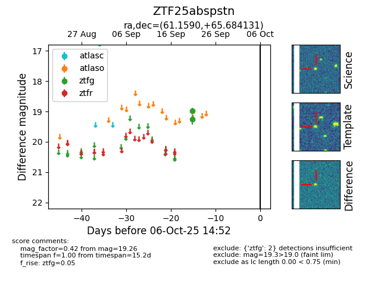

FINK: ZTF25abspstn
Lasair: ZTF25abspstn
ALeRCE: ZTF25abspstn
ZTF25abspstn (ztf,fink)
equatorial (ra, dec) = (61.1590,+65.68413)
galactic (l, b) = (141.1163,+9.88933)

last ztfg=19.26
2 ztfg detections